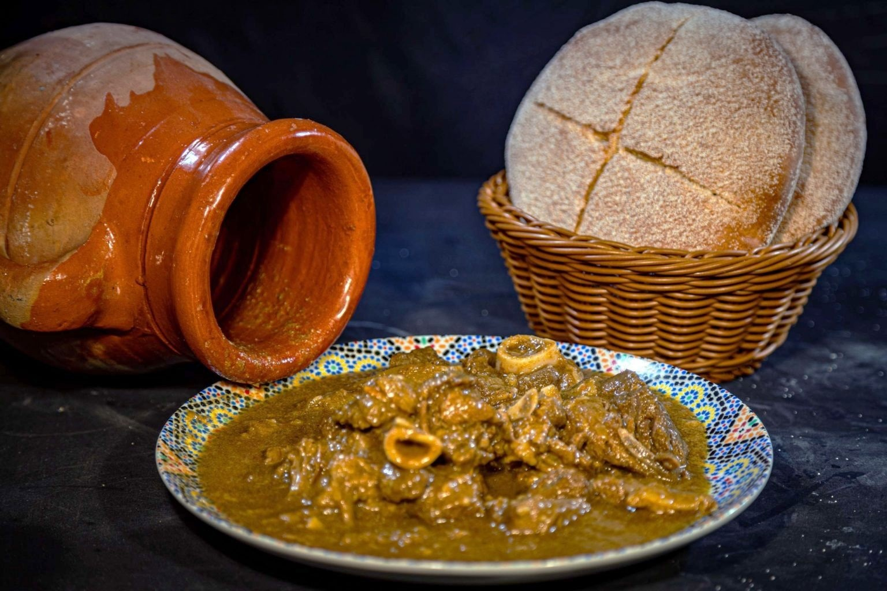

Tanjia Marrakchia

Description
Tanjia Marrakchia is a traditional Moroccan dish from Marrakech, slow-cooked to perfection with spices and tender meat, creating a rich and flavorful experience.
Ingredients
- 1.5 kg lamb shoulder or beef, cut into large pieces
- 6 cloves of garlic, minced
- 1 tablespoon ground cumin
- 1 tablespoon ground coriander
- 1 teaspoon ground cinnamon
- 1 preserved lemon, cut into quarters
- 1 tablespoon olive oil
- Salt and pepper to taste
- 1-2 cups water
- Optional: fresh parsley or cilantro for garnish
Directions
- Preheat your oven to 150°C (300°F) if you’re using one, or prepare a small fire for traditional cooking.
- In a mixing bowl, combine the minced garlic, cumin, coriander, cinnamon, salt, and pepper. Rub this mixture thoroughly over the pieces of lamb or beef.
- Place the seasoned meat into a tanjia pot (or a Dutch oven if you don't have a tanjia) and add the preserved lemon quarters. Drizzle with olive oil.
- Add enough water to the pot to submerge the meat halfway. Cover the pot with its lid, sealing it to keep the moisture in.
- If using an oven, cook for about 3-4 hours, or until the meat is very tender. If using traditional cooking, bury the pot in the hot ashes and cook for the same duration.
- Once done, carefully uncover the pot and check the seasoning. Serve hot, garnished with fresh parsley or cilantro if desired.
Serving Suggestion
Serve the Tanjia with Moroccan bread to soak up the delicious sauce.
Home